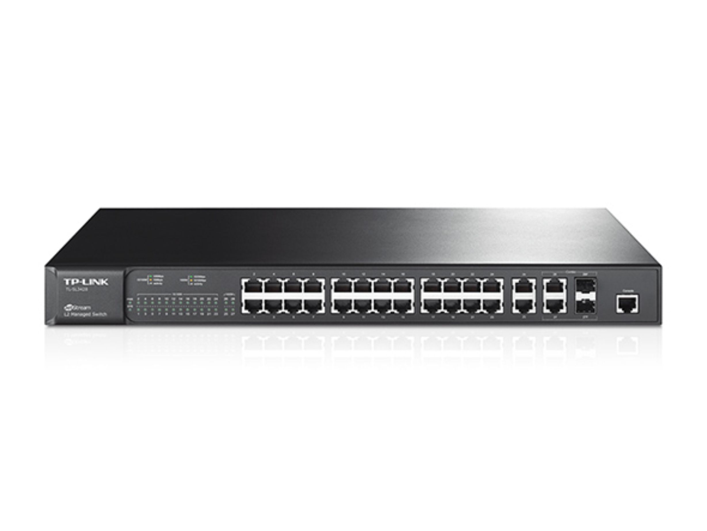

Switch thường hoạt động ở lớp 2 (Layer 2) của mô hình OSI (Lớp Liên kết Dữ
liệu - Data Link Layer) và sử dụng địa chỉ MAC để xác định đích đến.
Switch mạng (Network Switch) là một thiết bị chuyển mạch thông minh, đóng
vai trò trung tâm trong hệ thống mạng cục bộ (LAN) để kết nối nhiều thiết
bị mạng (như máy tính, máy in, máy chủ, camera IP, v.v.) lại với nhau.
Nó hoạt động như một cầu nối đa cổng (multi-port bridge), giúp quản lý và
điều hướng lưu lượng dữ liệu (dưới dạng các khung dữ liệu - frames) đến
đúng thiết bị đích một cách hiệu quả.
